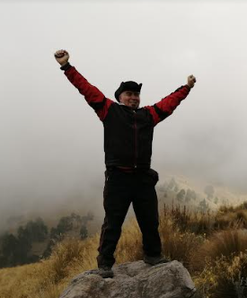

-
Jose Pedro Manjarrez Perez
 -
Presentaciòn
Hola Mi nombre es Jose Pedro Manjarrez Perez, en proceso en el desarrollo FRONTEND, iniciando con la creacion de paginas WEB
Mi formacion ha sido en informatica, mas orientada a servidores, operacion, redes y soporte TI, actualmente participo en el proyecto de Alura ONE Latam